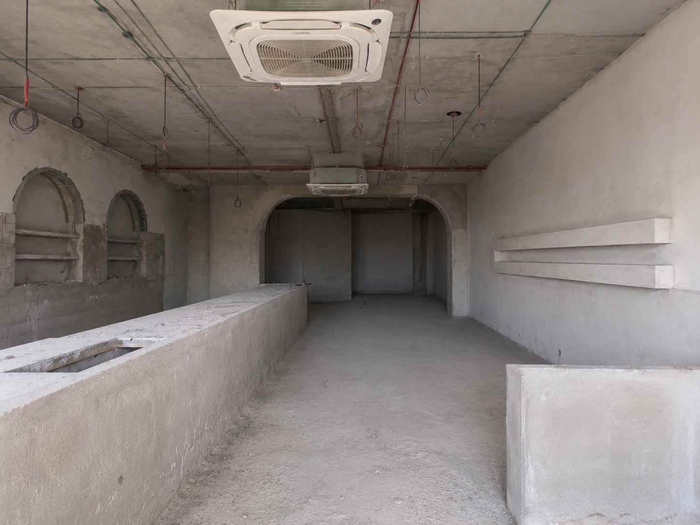
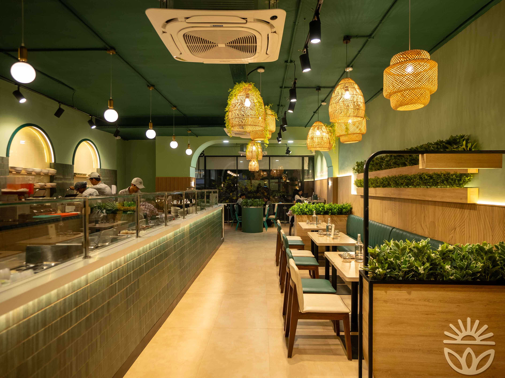

What Makes a 15-Day Restaurant Fit-Out Possible?
Yes, a restaurant fit-out can be completed in 15 days under the right conditions—but it is not a realistic timeline for every restaurant.
A compressed restaurant build depends on much more than asking contractors to work faster. It requires the project to be organised differently.
The design needs to be resolved quickly. Site information must be accurate. Engineering and procurement need to begin early. Suitable interior components need to be manufactured away from site while civil and MEP preparation happens simultaneously.
In other words, the biggest time saving comes from parallel working rather than accelerated site labour.
That is the principle behind the FlatPack Method. Instead of treating:
as completely separate stages, they are coordinated so that suitable activities can overlap.
FlatPackCo demonstrated this approach on Harvest Salad & Co. in Indiranagar, Bengaluru, where the QSR was taken from a bare shell to an opening-ready restaurant in 15 days.
But understanding how that was possible is more useful than simply focusing on the number.
First: Can Every Restaurant Be Built in 15 Days?
No.
A 15-day restaurant fit-out should not be treated as a standard construction timeline or universal promise. Restaurant projects vary enormously.
A small QSR with a clearly defined concept and straightforward services is very different from:
- A large fine-dining restaurant
- A complex bar
- A restaurant requiring major structural work
- A site waiting for landlord approvals
- A location requiring extensive HVAC or exhaust modifications
- A project using imported finishes
- A restaurant where the design is still changing
The realistic project duration depends on:
- Restaurant size
- Site condition
- Design complexity
- MEP requirements
- Kitchen complexity
- Material availability
- Approvals
- Scope of work
- Custom manufacturing
- Access restrictions
- Client decision-making
- Changes during execution
So when FlatPackCo says “from concept to grand opening in as little as 15 days,” the key phrase is “as little as.” A 15-day programme may be achievable for smaller, well-prepared projects where the scope, site conditions, approvals, materials and delivery strategy allow multiple stages to run in parallel. Larger or more complex projects will require longer timelines agreed according to their specific scope.
Why Traditional Restaurant Construction Often Takes Longer
A conventional restaurant fit-out frequently follows a relatively sequential process. It may look something like this:
The problem is not that any one of these activities necessarily takes too long. The problem is that one activity often waits for another.
- The carpenter waits for the civil work.
- The furniture vendor waits for final dimensions.
- The counter fabricator waits for service locations.
- The site team waits for materials.
- And every design revision creates another loop.
A project can therefore lose time between activities even when every individual team is working efficiently.
The FlatPack Method Changes the Sequence
FlatPackCo describes its delivery model as:
The important difference is that these stages are coordinated rather than managed as disconnected packages.
Approved components are engineered for manufacturing, materials are procured around the programme, and suitable restaurant elements are fabricated in a controlled workshop environment while site preparation can progress in parallel.
The programme therefore starts to look less like a straight line. Instead, work at site can progress while work off-site happens at the same time:
At Site
- Civil preparation
- Electrical work
- Plumbing
- Drainage
- HVAC
- Fire coordination
- Floor preparation
- Other enabling works
Off-Site
- Counters
- Panelling
- Furniture
- Display units
- Partitions
- Joinery
- Service stations
- Selected branded elements
For a full explanation of the off-site side, see What Is Off-Site Restaurant Construction?
What Actually Happened in a 15-Day Restaurant Project?
FlatPackCo's Harvest Salad & Co. project in Indiranagar, Bengaluru provides a useful example. The project involved converting a bare shell into a branded QSR and café.


The documented scope included:
- Kitchen partition
- Glazing
- Façade bulkhead
- Entrance panelling
- Service counter partitions
- POS counter
- Worktop
- Back POS counter
- Packing counter
- Sink counter
- Back counter
- Curved illuminated wall panelling
- Digital menu-board stand
- Merchandise display
- Printed wall panelling
- Planters
- Service station
- Community table
- Doors
- Booth seating
- Café tables
- Chairs
- High chairs
FlatPackCo records 27 Flatpack elements being fabricated and installed within the project.
The key point is that these elements were not all fabricated sequentially inside the restaurant. The manufactured scope was produced off-site while civil work progressed on the ground.
A Real 15-Day Restaurant Fit-Out Programme
The published Harvest Salad & Co. programme gives a useful picture of how a compressed restaurant project can work.
See the Harvest Salad & Co. Project
Design and Shop Drawings
Days 1–2The first priority is not demolition. It is information.
Layouts, dimensions and manufacturing details need to be resolved rapidly enough for the site and manufacturing teams to move forward.
Shop drawings translate design intent into information that can actually be fabricated. That includes details such as:
- Dimensions
- Materials
- Fixings
- Joinery
- Service cut-outs
- Panel divisions
- Counter details
- Hardware
- Installation interfaces
Without this information, manufacturing cannot begin reliably. This is why fast construction depends on fast, disciplined decision-making at the front end.

Demolition and Civil Preparation
Days 1–3While design and manufacturing information is being finalised, site enabling works can begin. Depending on the project, this may include:
- Clearing the shell
- Demolition
- Basic civil works
- Wall preparation
- Floor preparation
- Service coordination
- Electrical preparation
- Plumbing
- Drainage
- Other enabling works
This is where parallel working begins. The project does not need to wait for every site activity to finish before work starts elsewhere.
Counters and Panelling Are Manufactured Off-Site
Days 2–7Once approved information is available, suitable restaurant components can enter production. For Harvest Salad & Co., FlatPackCo documents the counter and panelling fabrication stage as Days 2–7.
This overlap is critical. While civil preparation is happening at the restaurant, another team can already be producing the elements that will eventually be installed there.
The construction programme effectively uses two workplaces at once: the restaurant site and the manufacturing facility.
That is fundamentally different from fabricating everything sequentially inside the restaurant.

Façade, Signage and Ceiling Installation
Days 8–11Once the enabling works and manufactured elements are ready, installation can begin. FlatPackCo's published project programme places façade, signage and ceiling installation during Days 8–11.
At this stage, the project begins to shift from fabrication toward assembly and installation. That distinction is important.
If a counter needs to be measured, cut, built, finished and adjusted entirely at the restaurant, it requires substantial site time. If major portions have already been engineered and fabricated, site activity becomes more focused on:
This can significantly reduce the amount of fabrication required during the final days of the programme.
Furniture and Display Installation
Days 12–13Furniture and branded display elements then move into place. At Harvest Salad & Co., this included elements such as:
- Booth sofas
- Café tables
- Chairs
- High chairs
- Community table
- Merchandise display
- Service stations
FlatPackCo documents this installation during Days 12–13. Again, the key advantage is that these elements have already been manufactured. Site time is used for installation rather than beginning their fabrication from raw materials.
Quality Check and Styling
Day 14A compressed programme still needs a dedicated inspection stage. The published Harvest Salad & Co. programme identifies Day 14 for quality checks and styling. This can include checking:
- Alignment
- Finishes
- Hardware
- Joinery
- Furniture
- Counter installation
- Signage
- Lighting
- Branding
- Touch-ups
- Final presentation
Fast does not mean skipping snagging. If anything, compressed programmes require quality control to be even more structured because there is less time available to recover from unresolved problems.

Project Handover
Day 15FlatPackCo records project handover on Day 15.
By this point, the objective is not merely to have construction workers leave the site. The restaurant needs to be in an opening-ready condition within the agreed project scope.
That distinction matters. A visually finished restaurant can still have unresolved technical, operational or approval requirements.
For any compressed project, the team needs to be clear from the beginning about exactly what “handover” and “opening-ready” include.
The 15-Day Timeline at a Glance
| Day | Main Activity |
|---|---|
| Days 1–2 | Design & shop drawings |
| Days 1–3 | Demolition & civil preparation |
| Days 2–7 | Counter & panelling fabrication |
| Days 8–11 | Façade, signage & ceiling installation |
| Days 12–13 | Furniture & display installation |
| Day 14 | Quality check & styling |
| Day 15 | Project handover |
This is the published programme for FlatPackCo's Harvest Salad & Co. project and should not be interpreted as the timeline for every restaurant. For a general stage-by-stage view, see our restaurant construction timeline guide.
What Makes a 15-Day Restaurant Build Possible?
1. The Design Cannot Remain Open-Ended
A fast project needs fast decisions. The design cannot keep evolving throughout manufacturing.
Questions such as these cannot remain unresolved indefinitely:
- Which laminate?
- Which counter design?
- Which chair?
- Which signage?
- Where does the POS go?
- Has the kitchen equipment changed?
- Are we changing the wall finish?
Every late decision affects another part of the programme. A compressed timeline therefore requires a much stronger design freeze.
2. Site Measurements Need to Be Reliable
Off-site manufacturing depends on accurate information. If a counter is being produced away from site, the manufacturing team needs confidence in wall dimensions, finished-floor levels, service locations, ceiling heights, openings, columns and installation clearances.
A conventional site-built element can sometimes absorb dimensional variations during fabrication. A pre-manufactured component has less tolerance for incorrect information.
Fast construction therefore requires better information—not less information.
3. Engineering Must Happen Before Problems Reach Site
Restaurants are technically complicated spaces.
If these conflicts are discovered during final installation, the project slows down. A compressed programme needs these interfaces resolved earlier.
FlatPackCo's model specifically places engineering between design and manufacturing, with elements engineered for precision production before reaching the workshop.
4. Procurement Needs to Begin Early
No manufacturing system can overcome a material that has not arrived. A compressed programme requires early identification of materials, hardware, lighting, furniture, equipment, signage requirements and specialist finishes.
If a design depends on a product with a six-week lead time, a 15-day site programme does not solve that problem.
This is why the FlatPack Method includes procurement as a defined part of the delivery system rather than treating material sourcing as an afterthought.
5. Manufacturing and Site Work Need to Run in Parallel
This is probably the single most important principle.
If both activities take seven days and happen one after another, they require approximately fourteen days. If suitable portions can happen simultaneously, significantly less calendar time may be needed.
That does not mean every task can overlap. The skill lies in identifying which ones can.
6. More Work Needs to Happen Before Installation
A 15-day restaurant build cannot rely on solving hundreds of details during the final few days. The work needs to move upstream.
More effort goes into surveying, design coordination, shop drawings, engineering, material confirmation, manufacturing planning and logistics.
The actual restaurant site can then become less of a fabrication workshop and more of a coordinated installation environment.
7. Components Need to Be Designed for Installation
Manufacturing a large counter off-site is not useful if it cannot pass through the restaurant entrance. The design therefore needs to consider:
- Component sizes
- Truck transport
- Packaging
- Door dimensions
- Mall service lifts
- Staircases
- Site access
- Assembly sequence
- Installation clearances
Suitable elements may need to be divided into modules that can travel efficiently and reconnect accurately on site. This is one of the practical principles behind FlatPack construction.
8. Everyone Needs to Work From the Same Information
Compressed programmes leave very little room for disconnected communication.
If the site team is working from Revision 3 while the factory is manufacturing from Revision 2, speed becomes irrelevant. Integration matters because all of these need to be aligned around the same approved information:
FlatPackCo's Restaurant Design & Build model brings these stages into one coordinated workflow rather than managing them independently. (See how that compares in Design & Build vs Architect + Contractor.)
What Can Be Manufactured While the Restaurant Site Is Being Prepared?
Depending on the project, suitable components can include:
Counters
- QSR service counters
- POS counters
- Coffee counters
- Bar counters
- Packing counters
- Back counters
Furniture
- Tables
- Chairs
- Stools
- Banquettes
- Booth seating
- Community tables
Joinery
- Service stations
- Storage
- Display units
- Hostess counters
- Shelving
Interior Components
- Wall panelling
- Decorative partitions
- Screens
- Selected ceiling elements
- Planters
- Branded features
The exact scope depends on the restaurant. A good off-site strategy does not attempt to manufacture everything. It identifies the work that becomes more predictable when moved away from the site.
What Cannot Simply Be “FlatPacked”?
Restaurant construction will always include work that depends heavily on the actual property. That can include:
- Demolition
- Civil modifications
- Waterproofing
- Floor preparation
- Electrical infrastructure
- Water supply
- Drainage
- HVAC
- Kitchen exhaust
- Fresh-air systems
- Fire services
- Gas infrastructure
- Equipment connections
- Structural changes
- Other site-specific work
So the FlatPack Method should not be interpreted as “the entire restaurant arrives in boxes.” A more accurate description is:
Suitable restaurant components are engineered and manufactured off-site while site-specific work progresses in parallel.
The final restaurant comes together when those two streams meet.
What Can Prevent a Restaurant From Being Built in 15 Days?
This is equally important.
- Major design changes — changing the layout after manufacturing starts can affect multiple components simultaneously.
- Unresolved kitchen equipment — equipment changes can affect power, drainage, plumbing and exhaust. (See our commercial kitchen guide.)
- Late material decisions — a manufacturing programme cannot begin without approved specifications.
- Long-lead products — imported or specialised products may make a compressed programme impossible.
- Incorrect site information — dimensional errors can prevent manufactured components from fitting properly.
- Approval delays — landlord, mall, fire or other external approvals may sit outside the build team's direct control.
- Structural work — extensive structural modifications can add activities that cannot simply be manufactured remotely.
- Poor site access — restricted loading hours, narrow service lifts or difficult access can slow installation.
- Too many decision-makers — a 15-day programme cannot afford several days for every material or drawing approval.
- Uncontrolled scope changes — adding requirements after the programme has begun changes the programme itself.
What Needs to Be Ready Before Day 1?
This is an important distinction. A 15-day fit-out programme should not be confused with starting from absolutely no information on Day 1.
Depending on the project, some items may need to be sufficiently understood or available beforehand, including:
- Confirmed site access
- Reliable site information
- Defined project scope
- Brand requirements
- Operational brief
- Kitchen requirements
- Major equipment information
- Decision-making authority
- Material strategy
- Approval pathway
The faster the build programme, the more important pre-construction preparation becomes. This is why the phrase:
“We will decide it on site”
is one of the fastest ways to turn a 15-day programme into something much longer.
Does Faster Construction Mean Lower Quality?
It should not.
There is an important difference between rushing construction and reducing the amount of sequential work.
If a conventional 40-day programme is simply forced into 15 days without changing the process, quality risks can increase dramatically.
But if the programme is shortened because:
- Manufacturing happens in parallel
- Engineering is resolved earlier
- Components are produced under controlled conditions
- Site fabrication is reduced
- Installation is planned in advance
then the time saving comes from the delivery model rather than from skipping necessary steps.
FlatPackCo positions controlled manufacturing and coordinated execution around three outcomes:
TIME. COST. QUALITY.
Is a 15-Day Restaurant Build Cheaper?
Not necessarily. Faster and cheaper are not the same thing.
The cost of a restaurant fit-out still depends on size, materials, kitchen, MEP requirements, furniture, customisation, equipment, logistics, site conditions and project location.
The commercial value of faster delivery may instead come from factors such as:
- Fewer days of site overhead
- Reduced dependency on site labour
- Lower risk of prolonged construction
- Earlier opening
- Earlier revenue generation
- More predictable rollout planning
For a restaurant operator, a useful calculation is therefore not simply “What does the construction cost?” but also:
“What does every week of delayed opening cost the business?”
Is 15 Days More Realistic for QSRs Than Fine-Dining Restaurants?
Generally, a compact QSR with repeatable elements and a clearly defined operational model may be more suitable for a compressed programme than a highly bespoke large-format restaurant.
QSR formats often include repeatable:
- Service counters
- Menu-board systems
- Seating
- Wall finishes
- Kitchen planning standards
- Branded graphics
- Furniture
Fine-dining restaurants may involve more:
- Bespoke joinery
- Specialist finishes
- Decorative lighting
- Complex ceiling systems
- Bars
- Acoustic treatments
- Custom furniture
But format alone does not determine the timeline. A well-prepared restaurant can move faster than a poorly prepared QSR.
Project readiness matters as much as project type.
Why a 15-Day Build Matters Even If Your Restaurant Takes Longer
This may be the most useful takeaway.
The value of the FlatPack Method is not dependent on every project achieving exactly 15 days. The same principles can improve a 30-day, 45-day or larger restaurant programme. For example:
- If manufacturing can begin earlier, time is saved.
- If technical conflicts are resolved before construction, rework is reduced.
- If counters are quality-checked before dispatch, fewer defects reach site.
- If successful components can be reused across outlets, the next project starts with more information.
The bigger idea is therefore not “Every restaurant should take 15 days.” It is:
“How much unnecessary waiting can we remove from the restaurant-building process?”
The FlatPack Method: Five Connected Stages
FlatPackCo structures the restaurant delivery process around five core stages.
Design
The restaurant concept is developed around brand, customer journey, operations, kitchen, seating and service flow.
The goal is not simply to create an attractive restaurant. It needs to work operationally.
Engineering
Approved elements are converted into buildable and manufacturable information. This reduces ambiguity before production starts.
Procurement
Materials, finishes and equipment are coordinated against the design and programme.
Manufacturing
Suitable components are produced in a controlled environment while site preparation can happen in parallel.
Execution
Components are transported, assembled and installed on site by a coordinated delivery team.
FlatPackCo extends the same system into rollout and scale, where successful design, engineering and manufacturing information can support subsequent locations.
Building One Restaurant Fast vs Building Many Restaurants Faster
The real opportunity becomes clearer when a brand starts expanding.
Imagine the first outlet establishes an approved:
- Counter system
- Banquette
- Chair
- Table
- Material palette
- Wall panel
- Display
- Signage detail
- Kitchen planning principle
The next outlet no longer starts from zero. Those approved elements can be adapted to the new site and put into manufacturing earlier—so each new location can benefit from what the last one already resolved. Our Restaurant Rollout Guide explains how to build that system.
Frequently Asked Questions
Can a restaurant really be built in 15 days?
Yes, some restaurant fit-outs can be completed within a 15-day programme when the project scope, design, site conditions, materials, approvals and delivery strategy support it. FlatPackCo's Harvest Salad & Co. project in Bengaluru was documented as moving from bare shell to opening-ready in 15 days. The timeline should be treated as a project example rather than a guarantee for every restaurant.
How did FlatPackCo build Harvest Salad & Co. in 15 days?
FlatPackCo used parallel working. Design and shop drawings were developed during Days 1–2, civil preparation ran during Days 1–3, and counters and panelling were fabricated during Days 2–7. Installation followed during Days 8–13, quality checks were completed on Day 14 and handover took place on Day 15.
Does 15 days include restaurant approvals and licences?
Not necessarily. Regulatory, landlord, mall, fire, liquor, food-service or other approvals can have independent timelines. The construction or fit-out programme should therefore be distinguished from the complete statutory process required to open a restaurant.
What kind of restaurant is easiest to build quickly?
Compact restaurants and QSRs with clearly defined layouts, standardised components, straightforward services and fast decision-making can be more suitable for compressed fit-out programmes. Actual timelines still depend on individual site conditions.
Does off-site manufacturing make restaurant construction faster?
It can. Suitable components can be manufactured while civil and technical preparation continues at the restaurant site. This allows activities that would otherwise happen sequentially to overlap.
What restaurant elements can be manufactured off-site?
Depending on the design, these can include counters, furniture, banquettes, wall panelling, partitions, displays, service stations, joinery, branded elements and selected ceiling components.
Does fast restaurant construction mean compromising quality?
Not necessarily. A programme can be shortened by changing the sequence of work rather than eliminating necessary steps. Early engineering, controlled manufacturing, parallel activity and planned installation can reduce project duration without relying solely on faster site labour.
What is the biggest requirement for a 15-day fit-out?
One of the biggest requirements is early decision-making. Site information, design, materials, equipment requirements and technical interfaces need to be resolved quickly enough for procurement and manufacturing to proceed without repeated changes.
What happens if the design changes during a 15-day programme?
Major changes can disrupt procurement, manufacturing and installation simultaneously. Compressed projects therefore require stronger design-freeze and change-control processes than conventional programmes.
Is every FlatPackCo project completed in 15 days?
No. Project timelines depend on size, complexity, site conditions, scope, approvals, materials and technical requirements. FlatPackCo describes its delivery capability as “as little as 15 days,” rather than stating that every project takes 15 days.
Is a 15-day fit-out possible for a fine-dining restaurant?
Potentially, but highly customised restaurants generally involve more complex design, technical coordination, finishes and specialist fabrication. The achievable programme should be evaluated project by project rather than determined only by restaurant category.
Can renovation projects also use this method?
Yes. Where suitable components can be surveyed, designed and manufactured before shutdown, off-site production may help reduce the amount of fabrication required during the actual closure period.
Is the FlatPack Method only suitable for restaurant chains?
No. The same integrated approach can apply to a single café, QSR, restaurant or bar. For chains, the benefits can increase because successful designs and manufactured components can support future locations.
What is the difference between a 15-day build and simply hiring more contractors?
Adding more labour does not necessarily remove project dependencies. The FlatPack approach aims to reduce sequential working by coordinating design, engineering, procurement, manufacturing and site execution so that suitable activities can progress simultaneously.
Working Toward an Opening Date?
Talk to FlatPackCo about your site, scope and target programme—and how much of it can run in parallel.